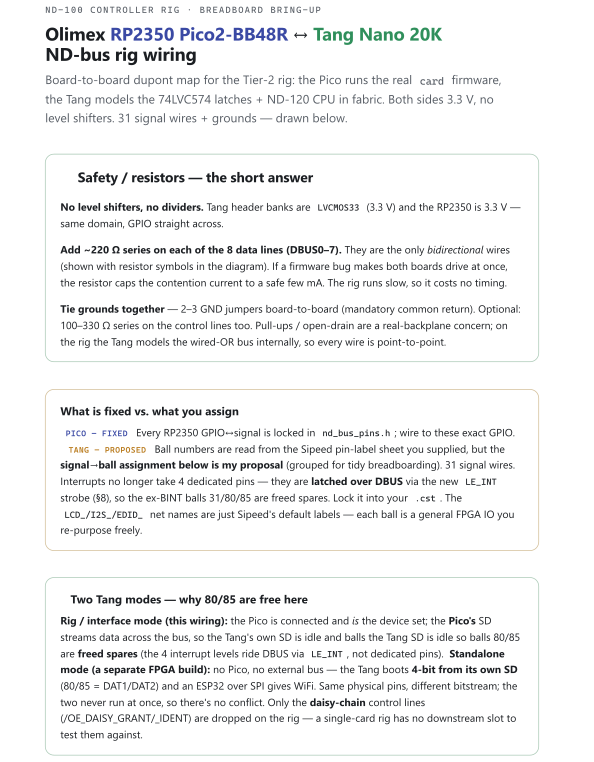
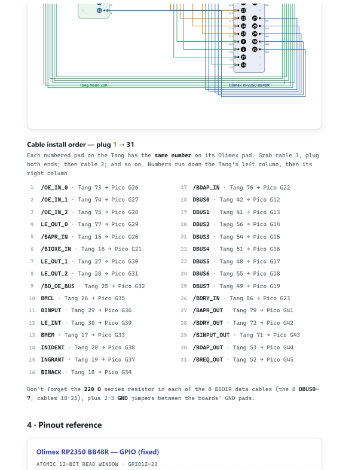
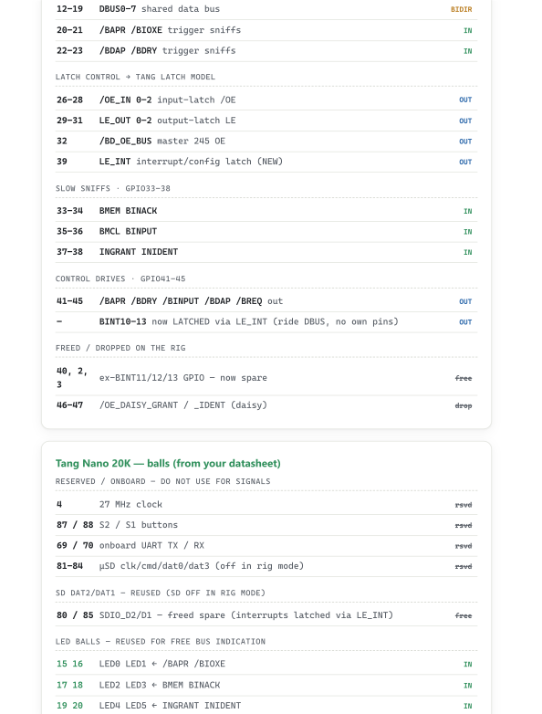
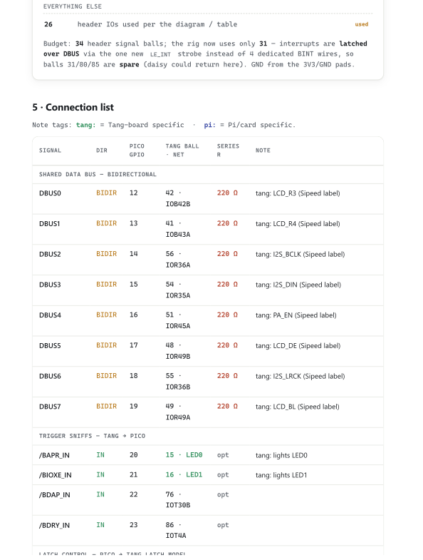
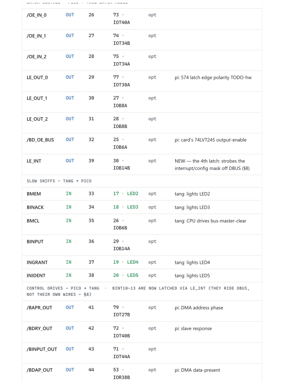
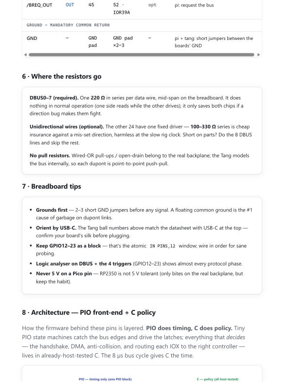
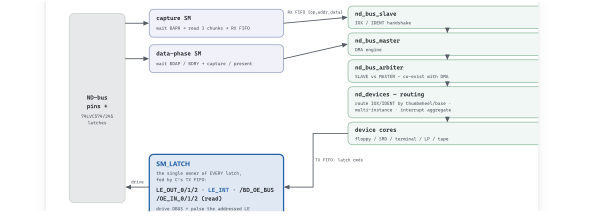

1 / 10

2 / 10
3 / 10
4 / 10
5 / 10

6 / 10

7 / 10

8 / 10

9 / 10

10 / 10

/BAPR_OUT) is now on Tang ball 31, not ball 79;
ball 79 is the onboard WS2812 status LED (a dedicated pin, no longer a rig cable).
The pages below still draw the old ball 79 assignment and cannot be edited (rendered vector).
WIRING-AND-BRINGUP-PLAN.md and wiredef.json in this folder
(and NDModulE/docs/design/nd120_tang20k_rig.cst).
Your document, rendered locally as crisp vector (sharp at any zoom). 31 signal wires + grounds.
§3 spans two sheets, exactly as it does in the PDF. Authoritative pin source:
NDModulE/docs/design/nd120_tang20k_rig.cst + nd_bus_pins.h.






